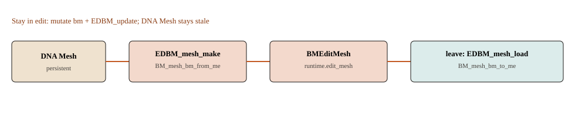

Tab 做了一次格式转换
idname OBJECT_OT_editmode_toggle（editors/object/object_edit.cc）。进模式：数组 → 半边。出模式：半边 → 数组。中间的工具不写 DNA。

进入
editmode_toggle_exec
editmode_enter_ex
ob->mode = OB_MODE_EDIT
EDBM_mesh_make(ob, selectmode, ...) /* editmesh_utils.cc */
BKE_mesh_to_bmesh / BM_mesh_bm_from_me
mesh->runtime->edit_mesh = make_shared<BMEditMesh>()
BKE_editmesh_looptris_and_normals_calc
DEG_id_tag_update(&ob->id, ID_RECALC_GEOMETRY)
离开
editmode_exit_ex -> editmode_load_free_ex
EDBM_mesh_load_ex(bmain, obedit, free_data)
BM_mesh_bm_to_me(bmain, bm, mesh, ¶ms)
EDBM_mesh_free_data / BKE_editmesh_free_data
edit_mesh.reset()
求值过程中还有 BM_mesh_bm_to_me_for_eval，给修改器一条临时数组，不代表用户已退出编辑。
留在编辑模式
工具改 em->bm，然后 EDBM_update（更新已写）：标 ID_RECALC_GEOMETRY + 重算法线/looptris。needs_flush_to_id 表示 DNA 过期。